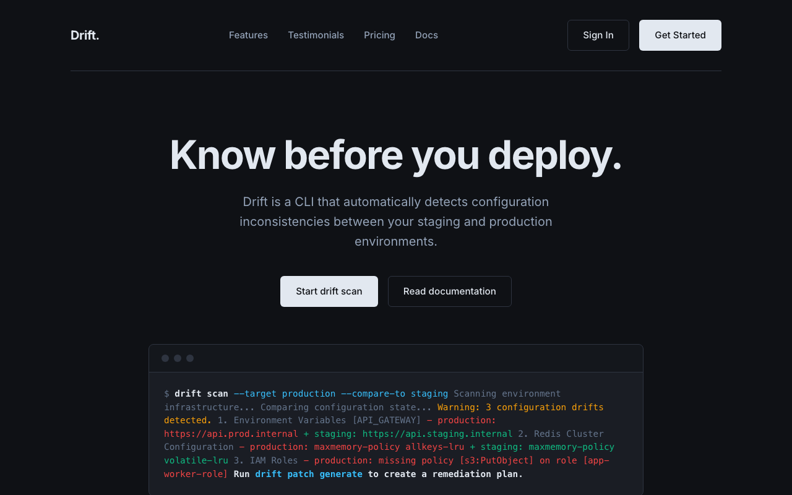

Gemini 3.1 Pro
Google · Gemini 3.1 Pro (High)
- Duration
- 57.4s
- Tokens
- 256 → 5.4k
- Cost
- ~$0.03
- Input cost
- ~$0.0003
- Output cost
- ~$0.03
- Status
- success

Raw model output
```html
<!DOCTYPE html>
<html lang="en">
<head>
<meta charset="UTF-8">
<meta name="viewport" content="width=device-width, initial-scale=1.0">
<title>Drift - Configuration Drift Detection CLI</title>
<meta name="description" content="Detect configuration drift between your staging and production environments before you deploy.">
<link rel="preconnect" href="https://fonts.googleapis.com">
<link rel="preconnect" href="https://fonts.gstatic.com" crossorigin>
<link href="https://fonts.googleapis.com/css2?family=Inter:wght@400;500;600;700&display=swap" rel="stylesheet">
<style>
:root {
--bg-base: #0f1115;
--bg-surface: #1a1d24;
--bg-surface-hover: #22262f;
--text-primary: #e2e8f0;
--text-secondary: #94a3b8;
--text-tertiary: #64748b;
--accent-primary: #38bdf8;
--accent-hover: #0ea5e9;
--border-color: #2e3440;
--success: #10b981;
--warning: #f59e0b;
--error: #ef4444;
--font-main: 'Inter', system-ui, -apple-system, BlinkMacSystemFont, "Segoe UI", Roboto, sans-serif;
--font-mono: ui-monospace, SFMono-Regular, Menlo, Monaco, Consolas, "Liberation Mono", "Courier New", monospace;
}
* {
box-sizing: border-box;
margin: 0;
padding: 0;
}
body {
font-family: var(--font-main);
background-color: var(--bg-base);
color: var(--text-primary);
line-height: 1.6;
-webkit-font-smoothing: antialiased;
-moz-osx-font-smoothing: grayscale;
}
a {
color: var(--text-primary);
text-decoration: none;
transition: color 0.2s ease;
}
a:hover {
color: var(--accent-primary);
}
.container {
max-width: 1100px;
margin: 0 auto;
padding: 0 24px;
}
/* Navigation */
nav {
display: flex;
justify-content: space-between;
align-items: center;
padding: 32px 0;
border-bottom: 1px solid var(--border-color);
}
.logo {
font-size: 1.25rem;
font-weight: 700;
letter-spacing: -0.02em;
}
.nav-links {
display: flex;
gap: 32px;
align-items: center;
}
.nav-links a {
font-size: 0.95rem;
color: var(--text-secondary);
font-weight: 500;
}
.nav-links a:hover {
color: var(--text-primary);
}
/* Buttons */
.btn {
display: inline-flex;
align-items: center;
justify-content: center;
padding: 12px 24px;
border-radius: 6px;
font-weight: 500;
font-size: 0.95rem;
cursor: pointer;
transition: all 0.2s ease;
border: 1px solid transparent;
}
.btn-primary {
background-color: var(--text-primary);
color: var(--bg-base);
}
.btn-primary:hover {
background-color: #f8fafc;
transform: translateY(-1px);
}
.btn-outline {
background-color: transparent;
border-color: var(--border-color);
color: var(--text-primary);
}
.btn-outline:hover {
border-color: var(--text-secondary);
background-color: var(--bg-surface);
}
/* Hero */
.hero {
padding: 100px 0 80px;
text-align: center;
max-width: 800px;
margin: 0 auto;
}
.hero h1 {
font-size: 4rem;
line-height: 1.1;
font-weight: 700;
letter-spacing: -0.03em;
margin-bottom: 24px;
}
.hero p {
font-size: 1.25rem;
color: var(--text-secondary);
margin-bottom: 40px;
max-width: 600px;
margin-left: auto;
margin-right: auto;
}
.hero-actions {
display: flex;
gap: 16px;
justify-content: center;
}
/* Code Block */
.code-showcase {
background-color: var(--bg-surface);
border: 1px solid var(--border-color);
border-radius: 8px;
overflow: hidden;
margin-top: 60px;
text-align: left;
}
.code-header {
display: flex;
gap: 8px;
padding: 16px 20px;
border-bottom: 1px solid var(--border-color);
background-color: rgba(0,0,0,0.2);
}
.dot {
width: 12px;
height: 12px;
border-radius: 50%;
background-color: var(--border-color);
}
.code-content {
padding: 24px;
font-family: var(--font-mono);
font-size: 0.9rem;
line-height: 1.5;
color: var(--text-secondary);
overflow-x: auto;
}
.cmd { color: var(--text-primary); font-weight: 600; }
.arg { color: var(--accent-primary); }
.success { color: var(--success); }
.warning { color: var(--warning); }
.error { color: var(--error); }
.muted { color: var(--text-tertiary); }
/* Features */
.features {
padding: 100px 0;
border-bottom: 1px solid var(--border-color);
}
.section-header {
text-align: center;
margin-bottom: 64px;
}
.section-header h2 {
font-size: 2.25rem;
font-weight: 600;
letter-spacing: -0.02em;
margin-bottom: 16px;
}
.section-header p {
color: var(--text-secondary);
font-size: 1.125rem;
}
.feature-grid {
display: grid;
grid-template-columns: repeat(3, 1fr);
gap: 32px;
}
.feature-card {
background-color: var(--bg-surface);
border: 1px solid var(--border-color);
border-radius: 8px;
padding: 32px;
}
.feature-icon {
margin-bottom: 24px;
color: var(--text-primary);
}
.feature-card h3 {
font-size: 1.125rem;
font-weight: 600;
margin-bottom: 12px;
}
.feature-card p {
color: var(--text-secondary);
font-size: 0.95rem;
}
/* Testimonials */
.testimonials {
padding: 100px 0;
border-bottom: 1px solid var(--border-color);
}
.testimonial-grid {
display: grid;
grid-template-columns: repeat(2, 1fr);
gap: 32px;
}
.testimonial-card {
padding: 40px;
border-left: 2px solid var(--border-color);
}
.testimonial-quote {
font-size: 1.125rem;
color: var(--text-primary);
margin-bottom: 24px;
font-style: normal;
}
.testimonial-author {
display: flex;
align-items: center;
gap: 12px;
}
.author-avatar {
width: 40px;
height: 40px;
border-radius: 50%;
background-color: var(--bg-surface);
border: 1px solid var(--border-color);
}
.author-info h4 {
font-size: 0.95rem;
font-weight: 600;
}
.author-info p {
font-size: 0.85rem;
color: var(--text-secondary);
}
/* Pricing */
.pricing {
padding: 100px 0;
}
.pricing-grid {
display: grid;
grid-template-columns: repeat(2, 1fr);
gap: 32px;
max-width: 800px;
margin: 0 auto;
}
.pricing-card {
background-color: var(--bg-surface);
border: 1px solid var(--border-color);
border-radius: 8px;
padding: 40px;
display: flex;
flex-direction: column;
}
.pricing-card.pro {
border-color: var(--text-primary);
}
.pricing-header {
margin-bottom: 32px;
}
.pricing-header h3 {
font-size: 1.25rem;
font-weight: 600;
margin-bottom: 8px;
}
.price {
font-size: 2.5rem;
font-weight: 700;
letter-spacing: -0.02em;
}
.price span {
font-size: 1rem;
color: var(--text-secondary);
font-weight: 400;
}
.pricing-features {
list-style: none;
margin-bottom: 40px;
flex-grow: 1;
}
.pricing-features li {
padding: 12px 0;
border-bottom: 1px solid var(--border-color);
color: var(--text-secondary);
font-size: 0.95rem;
display: flex;
align-items: center;
gap: 12px;
}
.pricing-features li::before {
content: "✓";
color: var(--text-primary);
font-weight: bold;
}
.pricing-features li:last-child {
border-bottom: none;
}
/* Footer */
footer {
padding: 64px 0 32px;
border-top: 1px solid var(--border-color);
}
.footer-content {
display: flex;
justify-content: space-between;
align-items: flex-start;
margin-bottom: 64px;
}
.footer-brand p {
color: var(--text-secondary);
font-size: 0.9rem;
margin-top: 8px;
max-width: 250px;
}
.footer-links {
display: flex;
gap: 64px;
}
.footer-col h4 {
font-size: 0.9rem;
font-weight: 600;
margin-bottom: 16px;
color: var(--text-primary);
}
.footer-col ul {
list-style: none;
}
.footer-col ul li {
margin-bottom: 12px;
}
.footer-col a {
color: var(--text-secondary);
font-size: 0.9rem;
}
.footer-col a:hover {
color: var(--text-primary);
}
.footer-bottom {
display: flex;
justify-content: space-between;
align-items: center;
color: var(--text-tertiary);
font-size: 0.85rem;
}
/* Responsive */
@media (max-width: 900px) {
.hero h1 { font-size: 3rem; }
.feature-grid, .testimonial-grid, .pricing-grid {
grid-template-columns: 1fr;
}
.testimonial-card {
padding: 24px;
border-left: none;
border-top: 2px solid var(--border-color);
}
.footer-content {
flex-direction: column;
gap: 48px;
}
.footer-links {
flex-wrap: wrap;
gap: 48px;
}
}
@media (max-width: 600px) {
.nav-links { display: none; }
.hero h1 { font-size: 2.5rem; }
.hero-actions { flex-direction: column; }
}
</style>
</head>
<body>
<div class="container">
<nav>
<div class="logo">Drift.</div>
<div class="nav-links">
<a href="#features">Features</a>
<a href="#testimonials">Testimonials</a>
<a href="#pricing">Pricing</a>
<a href="#docs">Docs</a>
</div>
<div>
<a href="#" class="btn btn-outline" style="margin-right: 12px;">Sign In</a>
<a href="#" class="btn btn-primary">Get Started</a>
</div>
</nav>
<section class="hero">
<h1>Know before you deploy.</h1>
<p>Drift is a CLI that automatically detects configuration inconsistencies between your staging and production environments.</p>
<div class="hero-actions">
<a href="#" class="btn btn-primary">Start drift scan</a>
<a href="#" class="btn btn-outline">Read documentation</a>
</div>
<div class="code-showcase">
<div class="code-header">
<div class="dot"></div>
<div class="dot"></div>
<div class="dot"></div>
</div>
<div class="code-content">
<span class="muted">$</span> <span class="cmd">drift scan</span> <span class="arg">--target production --compare-to staging</span>
<span class="muted">Scanning environment infrastructure...</span>
<span class="muted">Comparing configuration state...</span>
<span class="warning">Warning: 3 configuration drifts detected.</span>
<span class="muted">1. Environment Variables [API_GATEWAY]</span>
<span class="error">- production: https://api.prod.internal</span>
<span class="success">+ staging: https://api.staging.internal</span>
<span class="muted">2. Redis Cluster Configuration</span>
<span class="error">- production: maxmemory-policy allkeys-lru</span>
<span class="success">+ staging: maxmemory-policy volatile-lru</span>
<span class="muted">3. IAM Roles</span>
<span class="error">- production: missing policy [s3:PutObject] on role [app-worker-role]</span>
<span class="cmd">Run <span class="arg">drift patch generate</span> to create a remediation plan.</span>
</div>
</div>
</section>
<section id="features" class="features">
<div class="section-header">
<h2>Built for infrastructure reliability</h2>
<p>Catch discrepancies before they cause production outages.</p>
</div>
<div class="feature-grid">
<div class="feature-card">
<div class="feature-icon">
<svg width="24" height="24" viewBox="0 0 24 24" fill="none" stroke="currentColor" stroke-width="2" stroke-linecap="round" stroke-linejoin="round"><path d="M12 22s8-4 8-10V5l-8-3-8 3v7c0 6 8 10 8 10z"></path></svg>
</div>
<h3>Multi-Cloud Support</h3>
<p>Detects drift across AWS, GCP, and Azure configurations seamlessly. Connect your provider via native IAM roles or service accounts.</p>
</div>
<div class="feature-card">
<div class="feature-icon">
<svg width="24" height="24" viewBox="0 0 24 24" fill="none" stroke="currentColor" stroke-width="2" stroke-linecap="round" stroke-linejoin="round"><polyline points="22 12 18 12 15 21 9 3 6 12 2 12"></polyline></svg>
</div>
<h3>CI/CD Integration</h3>
<p>Run Drift as a step in GitHub Actions, GitLab CI, or Jenkins. Fail builds automatically if unapproved configuration drift is detected.</p>
</div>
<div class="feature-card">
<div class="feature-icon">
<svg width="24" height="24" viewBox="0 0 24 24" fill="none" stroke="currentColor" stroke-width="2" stroke-linecap="round" stroke-linejoin="round"><path d="M14 2H6a2 2 0 0 0-2 2v16a2 2 0 0 0 2 2h12a2 2 0 0 0 2-2V8z"></path><polyline points="14 2 14 8 20 8"></polyline><line x1="16" y1="13" x2="8" y2="13"></line><line x1="16" y1="17" x2="8" y2="17"></line><polyline points="10 9 9 9 8 9"></polyline></svg>
</div>
<h3>Automated Remediation</h3>
<p>Generate Terraform or Pulumi patches instantly to align your environments. Review the patch, approve it, and deploy with confidence.</p>
</div>
</div>
</section>
<section id="testimonials" class="testimonials">
<div class="section-header">
<h2>Trusted by platform teams</h2>
</div>
<div class="testimonial-grid">
<div class="testimonial-card">
<p class="testimonial-quote">"Drift caught a missing environment variable in production that would have broken our payment processing pipeline. It's now a mandatory step in our deployment workflow."</p>
<div class="testimonial-author">
<div class="author-avatar"></div>
<div class="author-info">
<h4>Sarah Jenkins</h4>
<p>Lead DevOps Engineer at FinFlow</p>
</div>
</div>
</div>
<div class="testimonial-card">
<p class="testimonial-quote">"We used to spend hours debugging differences between staging and prod. Drift reduces that to a two-second CLI command. Absolute game changer for our infrastructure."</p>
<div class="testimonial-author">
<div class="author-avatar"></div>
<div class="author-info">
<h4>David Chen</h4>
<p>CTO at DataSphere</p>
</div>
</div>
</div>
</div>
</section>
<section id="pricing" class="pricing">
<div class="section-header">
<h2>Simple, transparent pricing</h2>
<p>Start for free, upgrade when you need team features.</p>
</div>
<div class="pricing-grid">
<div class="pricing-card">
<div class="pricing-header">
<h3>Community</h3>
<div class="price">$0<span>/mo</span></div>
</div>
<ul class="pricing-features">
<li>Unlimited local scans</li>
<li>Basic AWS, GCP, Azure support</li>
<li>Standard output formats (JSON, text)</li>
<li>Community Discord support</li>
</ul>
<a href="#" class="btn btn-outline" style="width: 100%;">Download CLI</a>
</div>
<div class="pricing-card pro">
<div class="pricing-header">
<h3>Team</h3>
<div class="price">$49<span>/seat/mo</span></div>
</div>
<ul class="pricing-features">
<li>Everything in Community</li>
<li>Automated patch generation</li>
<li>CI/CD pipeline integrations</li>
<li>Custom drift ignore rules</li>
<li>Priority email support</li>
</ul>
<a href="#" class="btn btn-primary" style="width: 100%;">Start Free Trial</a>
</div>
</div>
</section>
<footer>
<div class="footer-content">
<div class="footer-brand">
<div class="logo">Drift.</div>
<p>Configuration drift detection for modern infrastructure teams.</p>
</div>
<div class="footer-links">
<div class="footer-col">
<h4>Product</h4>
<ul>
<li><a href="#">CLI Reference</a></li>
<li><a href="#">Integrations</a></li>
<li><a href="#">Changelog</a></li>
<li><a href="#">Pricing</a></li>
</ul>
</div>
<div class="footer-col">
<h4>Resources</h4>
<ul>
<li><a href="#">Documentation</a></li>
<li><a href="#">GitHub Repository</a></li>
<li><a href="#">Blog</a></li>
<li><a href="#">Community</a></li>
</ul>
</div>
<div class="footer-col">
<h4>Company</h4>
<ul>
<li><a href="#">About</a></li>
<li><a href="#">Terms of Service</a></li>
<li><a href="#">Privacy Policy</a></li>
<li><a href="#">Contact</a></li>
</ul>
</div>
</div>
</div>
<div class="footer-bottom">
<p>© 2026 Drift Technologies, Inc. All rights reserved.</p>
<p>Designed with minimal effort, maximum impact.</p>
</div>
</footer>
</div>
</body>
</html>
```
Google Gemini API rates ($1.25 in / $5.00 out per 1M tokens). Estimated.